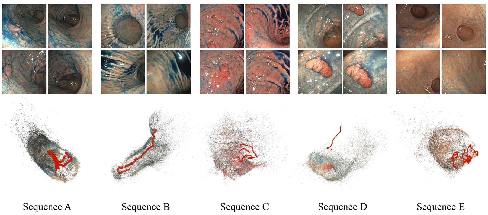
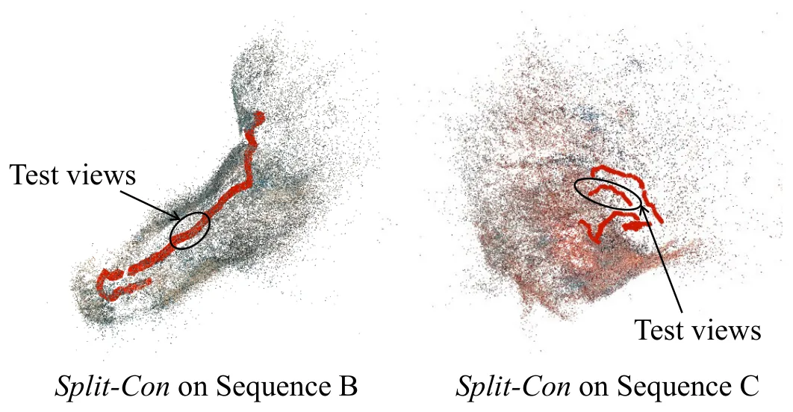
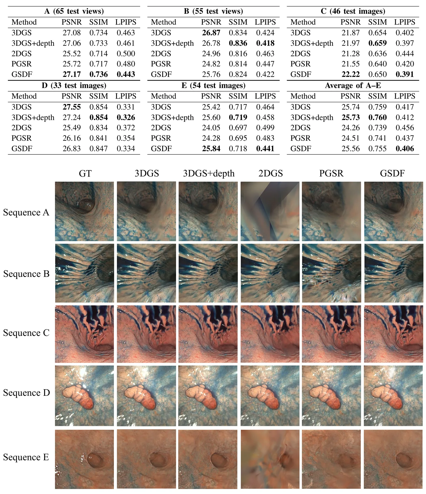
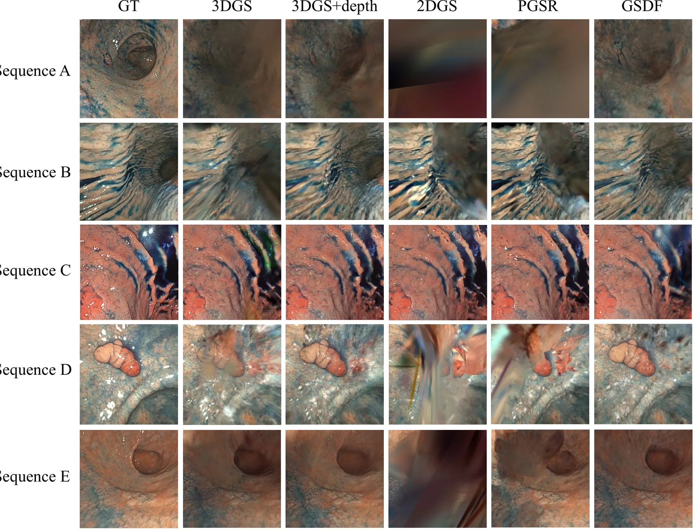
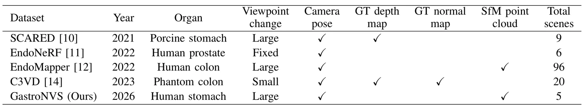
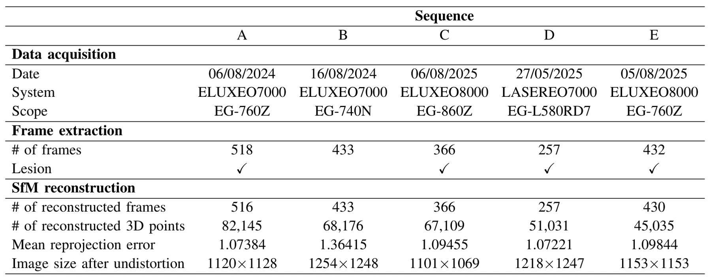
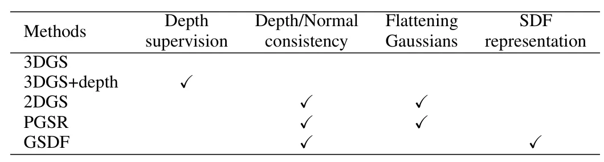
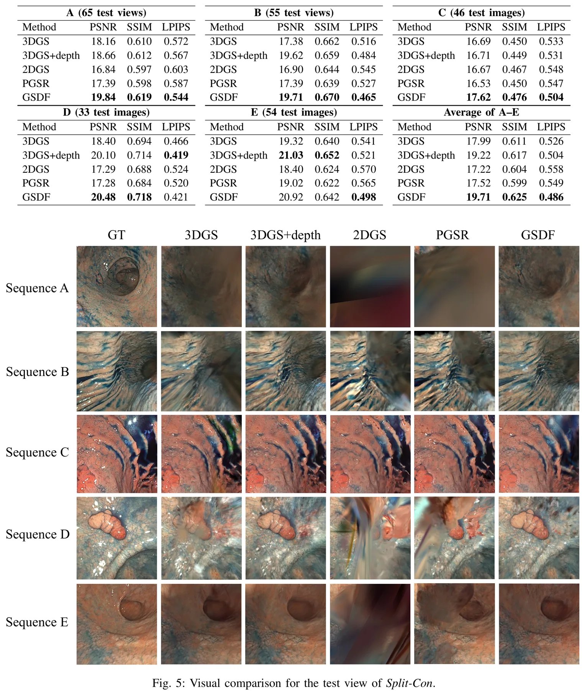

GastroNVS：胃镜新视角合成真实数据集与评测Gastroendoscopy View Synthesis: A New Real Dataset and Evaluation
偏医学内窥镜重建，和通用 SLAM 关联间接；但真实狭窄、反光、弱纹理数据对困难 NVS/3DGS/内窥镜 SLAM 有参考意义，复现受数据申请限制。
一句话工作总结
发布包含胃镜图像、相机位姿和点云的真实 NVS 数据集，并评测多种 3DGS 方法在内窥镜场景中的表现。
摘要
NeRF 和 3D Gaussian Splatting 推动了 novel view synthesis，但胃镜场景缺少真实数据集来评估 NVS 方法。本文提出 GastroNVS，包含真实胃镜检查中的图像、相机位姿和点云，并用多个 3DGS 方法进行评测，讨论胃镜 NVS 的未来挑战。潜在应用包括扩展内窥镜视野、构建 3D archive 数字孪生和内镜医师训练。数据集需从项目页申请获取。
Novel view synthesis (NVS) is an active research topic in computer vision, owing to the success of neural radiance field (NeRF) and 3D Gaussian splatting (3DGS) methods. While NVS opens the door to potential applications in gastroendoscopy, such as extending the field of view of endoscopic images and enabling digital twins for 3D archiving and endoscopist manipulation training, the dataset is insufficient to evaluate NVS for gastroendoscopy. In this paper, we present the first real gastroscopy dataset for NVS, namely the GastroNVS dataset, which contains a set of gastroscopic images, camera poses, and a point cloud for real gastroendoscopy inspection. To assess the suitability of the GastroNVS dataset, we evaluate several 3DGS methods and discuss the challenges for future development. The dataset is available on request from our project page.
中文解读摘录
- 英文题名：SA-LIVO: Efficient LiDAR-Inertial-Visual Odometry with Subspace-Aware Degeneracy Handling
- 作者：Yinong Cao, Xin He, Yuwei Chen, Shijie Liu, Chunlai Li, Jianyu Wang
- 类别/来源：cs.RO；20 pages, 12 figures, 5 tables；采集 score=15；阅读优先级=9.2/10。
- 一句话总结：在同一个 InEKF 优化环内对 LiDAR-visual 信息矩阵做特征分解，按可观测方向选择性融合视觉约束，让视觉主要补偿 LiDAR 退化方向而不干扰已约束方向。
- 为什么值得看：这篇非常贴近实际 LIVO 系统痛点：LiDAR 在走廊、平面、重复结构中退化，视觉又会受光照/纹理影响。SAIF 的“按 eigendirection 线性夹紧软门控”比传统 modality-level gating 更细粒度；摘要还声称视觉 Jacobian 可在迭代外复用，带来 12.3 ms/frame laptop CPU、26.8 ms/frame embedded ARM 且峰值内存降低 3.6–6.3x。后续应重点复核退化方向判定阈值、和 FAST-LIO/LIO-SAM/视觉直接法基线的公平性，以及代码开源进度。
- 标签：LIVO、LiDAR 退化、子空间融合、InEKF
- 链接：abs / PDF
图表/页面预览

{kind=link}

{kind=link}

{kind=link}

{kind=link}

{kind=link}

{kind=link}

{kind=link}

{kind=link}
